Primære værktøjer

HTML

CSS

JavaScript

Next.js
VS Code
Jeg er frontend-studerende på Erhvervsakademi København og brænder for at skabe brugervenlige og visuelle webløsninger.
Som færdiguddannet ser jeg mig selv i en rolle som frontend-udvikler med designkompetencer, hvor jeg kan kombinere teknisk ekspertise med kreativitet.
Med erfaring i HTML, CSS, JavaScript og Next.js - samt Figma til design og prototyping - søger jeg en praktikplads, hvor jeg kan udvikle mine JavaScript-færdigheder og arbejde med dynamiske webapplikationer.
Er I et firma, der værdsætter kreativitet og teknisk nysgerrighed? Så hører jeg gerne fra jer!
HTML
CSS
JavaScript
Next.js
VS Code
Github
Figma
Photoshop
ProCreate
Done? - Check off

Important? - Check off

Delete? - Check off

Vi skulle udvikle en funktionel ToDo-app og havde fokus på JavaScript, DOM-manipulation, LocalStorage og relevant feedback. Vi skulle ToDo-appen interaktiv med klikbare elementer og inputfelter, der kan oprette, markere, slette og sendes fra “to do” til “done”. Dette giver også ToDo-appen visuelt feedback ud fra animationer - som en opgave, der er klikket af eller en skraldespand, der åbner og lukker, når en opgave bliver slettet. ToDo-appen virker her på siden, prøv engang.
GitHubRedesign af hjemmeside for NV-Foto. Vi havde til opgave at modernisere deres hjemmeside, ud fra specifikke design ønsker, gøre den responsiv og mere moderne. Vi kodede siden i Astro frameworks og sammen lavede vi research, brugerinterviews, design og prototype. Jeg stod for Pas Foto siden samt Kamera siden, hvor jeg tilføjede hover effekter for mere interaktion (ses på video) og hjalp med at rette til i min projektgruppes kode dele.
GitHub NV-Foto